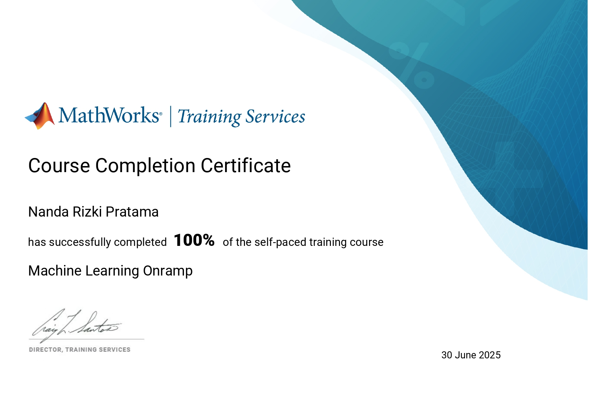
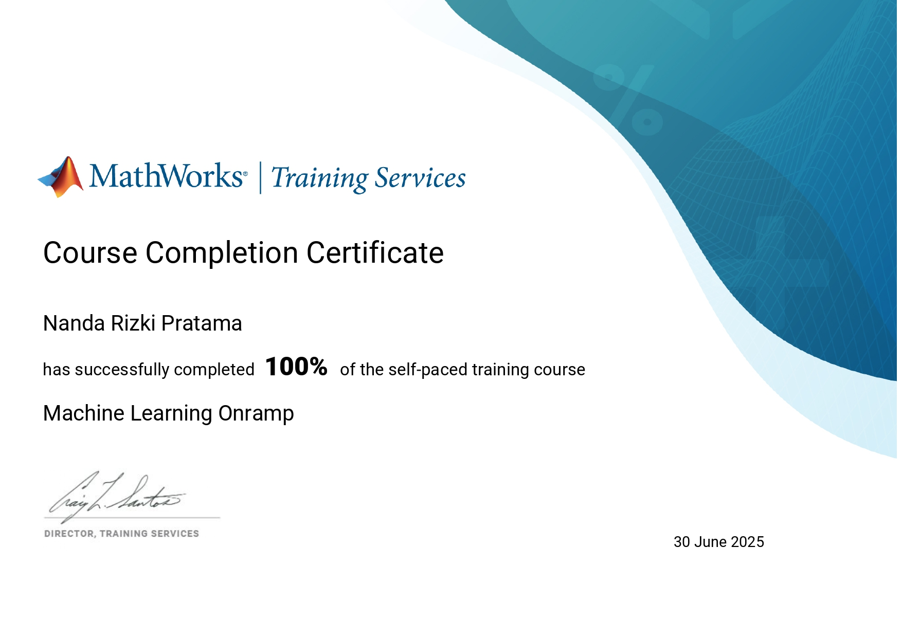

Hello, I am
Nanda Rizki Pratama
A student majoring who is passionate about transforming raw data into meaningful insights through analytics, machine learning, and data visualization.


.jpg)
About Me
Ready to Collaborate on Your Next Data-Driven or Web Project.
I am Nanda Rizki Pratama, an active Informatics student with a concentration in Data Science, passionate about data processing and analysis. I am experienced in transforming raw data into meaningful insights through data cleaning, exploratory analysis, and predictive modeling using machine learning algorithms, supported by tools such as Python, Pandas, and RapidMiner. Additionally, I have skills in both frontend and backend web development. With a strong eagerness to learn and the ability to adapt to technological advancements, I am committed to continuous growth and making meaningful contributions in the field of information technology and data analytics.
My Services
Whether you're launching a new business or refreshing your digital presence, I offer tailored services that blend creativity with functionality. Let's turn ideas into experiences.
Web Development
Modern and responsive websites using HTML, CSS, JS, and php.
Analisis & Visualisasi Data
Turn complex raw data into meaningful insights through graphs, charts and interactive maps to discover hidden patterns.
Machine Learning Modeling
Develop and implement predictive models for forecasting, customer classification, or automating decision making.
Data Engineering & Processing (ETL)
Designing workflows for Extract, Transform, Load (ETL) processes, cleaning and preparing raw data into solid datasets ready for analysis.
SEO Optimization
Boost visibility with clean, semantic code and optimized structure.
Interactive Dashboard Development
Create comprehensive real-time dashboards to monitor Key Performance Indicators (KPIs) and help stakeholders make data-driven decisions.
My Projects
Here are some of my recent works in web development and design.


My Certificate


_page-0001.jpg) 


Get In Touch
Let's collaborate and bring your ideas to life!
- rizkiperawang28@gmail.com.com
- Pekanbaru, Riau, Indonesia